1. Os Dados: Universidade de Wyoming, Download e Controle de Qualidade
As radiossondagens atmosféricas brutas são obtidas do servidor da Universidade de Wyoming nos formatos
TEXT:LIST (tabela vertical dos níveis de pressão) e INDICES (índices derivados).
Antes de qualquer cálculo, realiza-se o controle de qualidade (QC) para verificar a consistência vertical,
garantir que \(T_d \le T\) e detectar gradientes térmicos verticais superadiabáticos (\(\Gamma = -\partial T/\partial z > 9{,}8\text{ K/km}\)).
Controle de Qualidade: Camadas com Gradientes Superadiabáticos em 28/08/2026
Na sondagem publicada de 28/08/2026 12Z, identificam-se camadas imediatamente acima de 925 hPa com forte gradiente térmico:
| Camada (hPa) | Espessura (\(\Delta z\)) | \(\Delta T\) | \(\Gamma = -\partial T/\partial z\) | \(\partial\theta/\partial z\) | \(\Delta\theta_e\) | Classificação do QC |
|---|---|---|---|---|---|---|
| 1009.0 → 1000.0 hPa | 74 m | -2.0 °C | 27.03 K/km | -16.22 K/km | -3.9 K | Superadiabática (Γ > 9.8 K/km) |
| 1000.0 → 996.0 hPa | 35 m | -0.6 °C | 17.14 K/km | -8.57 K/km | -0.7 K | Superadiabática (Γ > 9.8 K/km) |
| 254.2 → 254.0 hPa | 6 m | -0.1 °C | 16.67 K/km | 16.67 K/km | +0.0 K | Superadiabática (Γ > 9.8 K/km) |
| 200.0 → 199.0 hPa | 31 m | -0.6 °C | 19.35 K/km | -16.13 K/km | -0.5 K | Superadiabática (Γ > 9.8 K/km) |
| 73.0 → 70.3 hPa | 227 m | +8.8 °C | -38.77 K/km | 103.08 K/km | +23.4 K | Descontinuidade de θe (> 15 K) |
| 38.0 → 35.0 hPa | 513 m | +0.8 °C | -1.56 K/km | 29.24 K/km | +15.1 K | Descontinuidade de θe (> 15 K) |
| 20.0 → 15.1 hPa | 1822 m | +1.6 °C | -0.88 K/km | 33.86 K/km | +61.9 K | Descontinuidade de θe (> 15 K) |
| 15.1 → 13.2 hPa | 874 m | -0.3 °C | 0.34 K/km | 31.81 K/km | +27.7 K | Descontinuidade de θe (> 15 K) |
Como ler:
- Identifique o decréscimo de pressão (\(p\)) e elevação geopotencial (\(z\)) em cada nível de amostragem.
- A taxa de lapso seca padrão é \(\Gamma_d \approx 9{,}8\text{ K/km}\). Valores superiores indicam gradiente superadiabático.
- Um valor de \(\partial\theta/\partial z < 0\) indica que a temperatura potencial decresce com a altura, caracterizando instabilidade estática imediata na camada seca.
- Em 28/08/2026, a camada \(925 \rightarrow 910{,}5\text{ hPa}\) apresenta \(\Gamma = 17{,}65\text{ K/km}\), fornecendo grande flutuabilidade à parcela de 925 hPa.
Perguntas para o estudante responder:
- Com base na tabela acima lida de
metpack/metricas.json, qual é a taxa de lapso \(\Gamma\) e a variação \(d\theta/dz\) na camada de \(910{,}5 \rightarrow 850\text{ hPa}\)? - Por que a camada quente e úmida observada em 925 hPa não deve ser descartada arbitrariamente, mas sim avaliada lado a lado com um teste de sensibilidade?
2. Diagramas Termodinâmicos Skew-T / Log-P
O diagrama Skew-T / Log-P plota a temperatura (\(T\)) e o ponto de orvalho (\(T_d\)) ao longo do perfil vertical de pressão.
A inclinação oblíqua das isotermas permite avaliar a energia potencial disponível para convecção (CAPE) e a inibição convectiva (CIN).
Cada sondagem é apresentada abaixo individualmente em sua própria linha em alta resolução, contendo o diagrama Skew-T completo,
seu respectivo hodógrafo polar de vento e a caixa de dados termodinâmicos e cinemáticos calculados.
2.1 Sondagem 1: 26/08/2026 12Z (SBFL): Atmosfera Estável
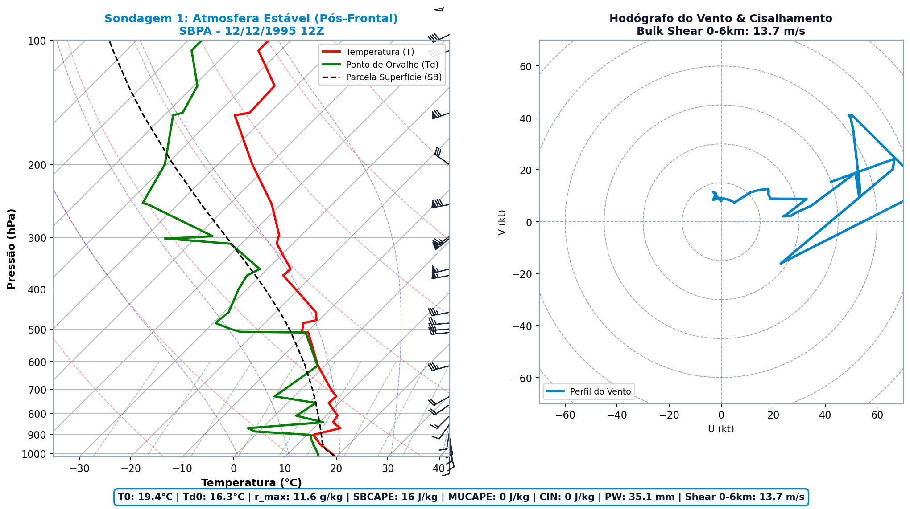
Figura 1: Diagrama Skew-T / Log-P com Hodógrafo Polar (lado superior direito) e Painel de Diagnósticos Físicos Completos Ampliado (lado inferior direito). SBCAPE = 16 J/kg, SBCIN = 0 J/kg, Shear 0-6 km = 13.7 m/s (26.6 kt). Clique para ampliar.
2.2 Sondagem 2: 31/08/2026 12Z (SBFL): Atmosfera Neutra
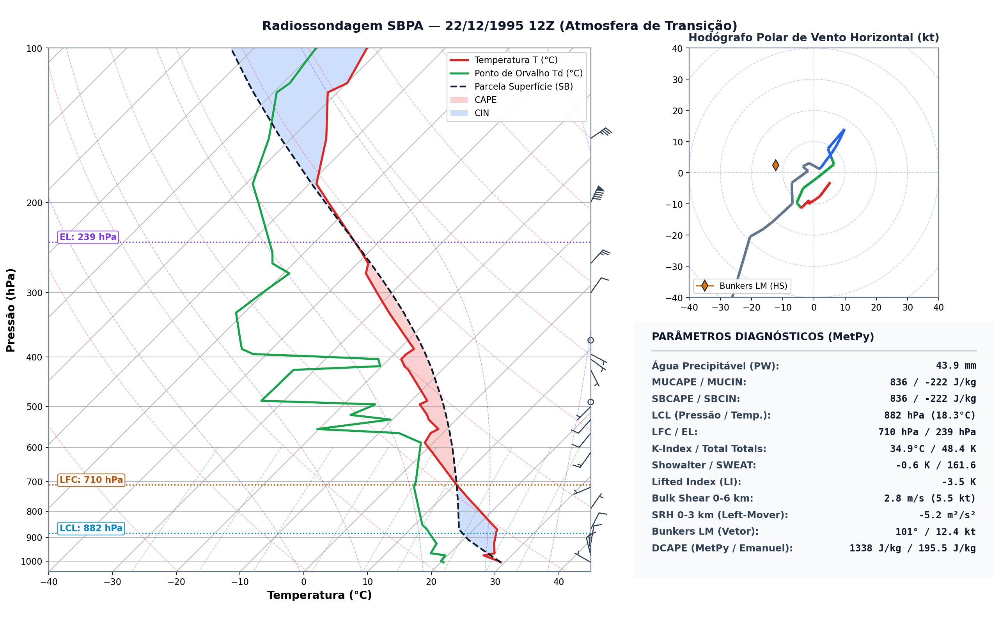
Figura 2: Diagrama Skew-T / Log-P com Hodógrafo Polar (lado superior direito) e Painel de Diagnósticos Físicos Completos Ampliado (lado inferior direito). MUCAPE = 836 J/kg, SBCAPE = 836 J/kg, SBCIN = -222 J/kg, PW = 43.9 mm, Shear 0-6 km = 2.8 m/s (5.5 kt). Clique para ampliar.
2.3 Sondagem 3: 28/08/2026 12Z (SBFL): Atmosfera Instável
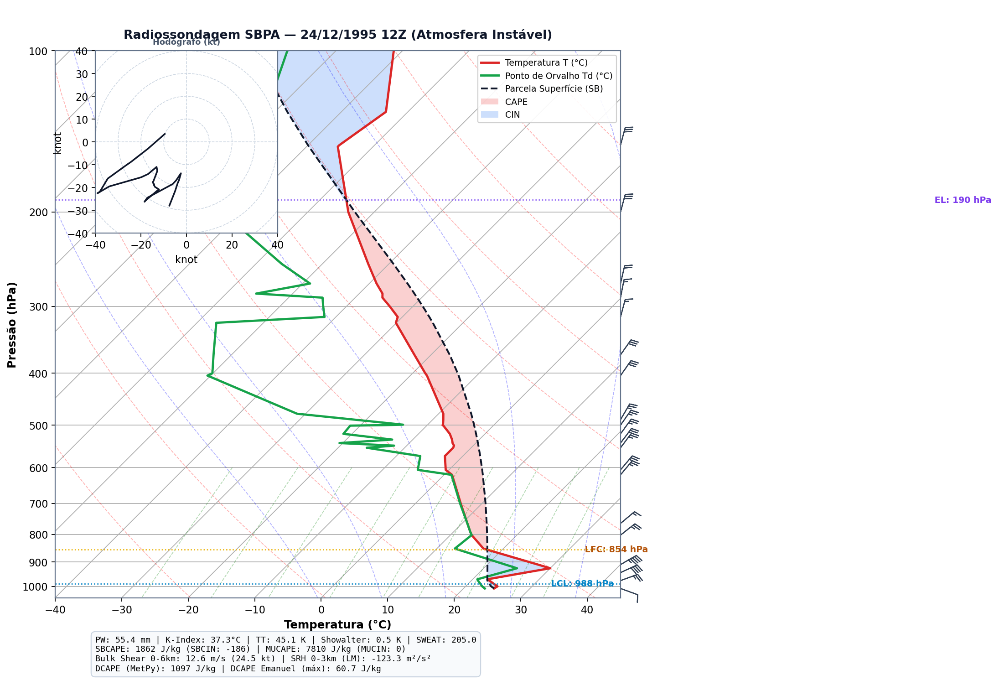
Figura 3: Diagrama Skew-T / Log-P com Hodógrafo Polar (lado superior direito) e Painel de Diagnósticos Físicos Completos Ampliado (lado inferior direito). MUCAPE = 7810 J/kg, SBCAPE = 1862 J/kg, Shear 0-6 km = 12.6 m/s (24.5 kt), SRH 0-3 km = -123.3 m²/s² (Left-Mover). Clique para ampliar.
Como ler:
- Linha vermelha = perfil observado de temperatura (\(T\)); linha verde = ponto de orvalho (\(T_d\)).
- Linha preta tracejada = trajetória da parcela de ar ascendente a partir da superfície.
- Linhas pontilhadas horizontais indicam o Nível de Condensação por Levantamento (LCL), Nível de Convecção Livre (LFC) e Nível de Equilíbrio (EL).
- Área sombreada em vermelho = CAPE; área sombreada em azul = CIN.
- O hodógrafo polar no canto superior direito exibe a estrutura vertical dos ventos horizontais em nós (kt), divididos por camadas coloridas de altitude, além do vetor de tempestades anômalas (Bunkers Left-Mover).
- O painel diagnóstico no canto inferior direito sintetiza com fontes grandes e alta legibilidade os índices de convecção calculados via MetPy.
Perguntas para o estudante responder:
- Em 26/08/2026, por que a curva da parcela quase não se afasta da temperatura ambiente e qual o valor de SBCAPE resultante registrado no JSON?
- Em 28/08/2026, identifique a pressão do LCL e do LFC na sondagem completa. Existe CIN significativo para a parcela de superfície?
3. Índices Diagnósticos de Convecção e Conferência Oficial
Síntese quantitativa dos parâmetros de instabilidade, umidade e cisalhamento para as três sondagens.
Os valores são lidos diretamente do arquivo
metpack/metricas.json. A tabela inclui a avaliação oficial da
sondagem completa e o teste de sensibilidade para 28/08/2026, além do confronto com os índices oficiais da Universidade de Wyoming.
Tabela Diagnóstica Comparativa dos Três Regimes Atmosféricos
| Parâmetro Diagnóstico | 26/08/2026 12Z (Estável) |
31/08/2026 12Z (Neutra) |
28/08/2026 12Z (Oficial Completa) |
28/08/2026 12Z (Sensibilidade sem 925) |
|---|---|---|---|---|
| Água Precipitável (PW) | 27.1 mm | 45.8 mm | 40.9 mm | 40.2 mm |
| SBCAPE (Superfície) | 8.1 J/kg | 0.0 J/kg | 442.8 J/kg | 446.4 J/kg |
| SBCIN (Inibição de Superfície) | 0.0 J/kg | 0.0 J/kg | -280.0 J/kg | -240.1 J/kg |
| MUCAPE (Parcela Mais Instável) | 0.0 J/kg | 267.1 J/kg | 1303.5 J/kg | 1109.5 J/kg |
| MUCIN | 0.0 J/kg | -6.1 J/kg | -5.0 J/kg | -49.7 J/kg |
| Nível do LCL | 985.3 hPa | 1003.1 hPa | 973.4 hPa | 973.8 hPa |
| Cisalhamento Bulk 0–6 km | 15.8 m/s (32.0 kt) | 31.9 m/s (67.0 kt) | 20.5 m/s (39.4 kt) | 20.5 m/s (39.9 kt) |
| Vento Observado em 925 hPa | 18.1 kt de 5° | 8.9 kt de 125° | 20.0 kt de 340° | Nível omitido |
| SRH 0–3 km (Bunkers Left-Mover) | -24.0 m²/s² | -174.7 m²/s² | -336.3 m²/s² | -295.4 m²/s² |
Comparação Padronizada dos Três Métodos de DCAPE (Item 4)
| Sondagem / Regime | Wyoming (INDICES) | MetPy (downdraft_cape) | Kerry Emanuel (cape.out, máx origens) |
|---|---|---|---|
| 26/08/2026 (Estável) | 613.6 J/kg | 588.5 J/kg | 47.3 J/kg (905 hPa) |
| 31/08/2026 (Neutra) | 633.9 J/kg | 635.7 J/kg | 4.9 J/kg (990 hPa) |
| 28/08/2026 (Instável (Oficial - Granizo Gigante)) | 1189.7 J/kg | 1217.1 J/kg | 47.3 J/kg (905 hPa) |
| 28/08/2026 (Instável (Sensibilidade)) | - | 1136.3 J/kg | - |
| 26/08/2026 (Estável) | 613.6 J/kg | 588.5 J/kg | 47.3 J/kg (905 hPa) |
| 31/08/2026 (Neutra) | 633.9 J/kg | 635.7 J/kg | 4.9 J/kg (990 hPa) |
| 28/08/2026 (Instável (Oficial - Granizo Gigante)) | 1189.7 J/kg | 1217.1 J/kg | 47.3 J/kg (905 hPa) |
| 28/08/2026 (Instável (Sensibilidade)) | - | 1136.3 J/kg | - |
Tabela de Conferência Completa: Wyoming Oficial (INDICES) vs. MetPy
Sondagem 26/08/2026 12Z
| Índice | Wyoming (Oficial) | MetPy | Diferença (Δ) |
|---|---|---|---|
| PW (Água Precipitável) | 27.1 | 27.1 | +0.0 |
| MUCAPE (Most Unstable CAPE) | 0.0 | 0.0 | +0.0 |
| MUCIN (Most Unstable CIN) | 0.0 | 0.0 | +0.0 |
| SBCAPE (Surface-Based CAPE) | N/A | 8.1 | - |
| SBCIN (Surface-Based CIN) | N/A | 0.0 | - |
| LCL Pressão (LCLP) | 977.0 | 985.3 | +8.3 |
| LFC Pressão (LFCP) | N/A | 893.5 | - |
| EL Pressão (EQLV) | N/A | 854.1 | - |
| K-Index (KINX) | 13.9 | 14.9 | +1.0 |
| Total Totals (TOTL) | 41.2 | 41.6 | +0.4 |
| Cross Totals (CTOT) | 17.1 | 17.1 | +0.0 |
| Vertical Totals (VTOT) | 24.1 | 24.1 | +0.0 |
| Showalter Index (SHOW) | 5.7 | 5.4 | -0.3 |
| SWEAT Index (SWET) | 87.0 | 89.7 | +2.7 |
| SWEAT com vento em nós | N/A | 117.7 | - |
| Lifted Index (LFVT/LIFT) | 3.1 | 3.1 | +0.0 |
| DCAPE (Downdraft CAPE) | 613.6 | 588.5 | -25.1 |
Sondagem 31/08/2026 12Z
| Índice | Wyoming (Oficial) | MetPy | Diferença (Δ) |
|---|---|---|---|
| PW (Água Precipitável) | 45.2 | 45.8 | +0.6 |
| MUCAPE (Most Unstable CAPE) | 228.1 | 267.1 | +39.0 |
| MUCIN (Most Unstable CIN) | -11.5 | -6.1 | +5.4 |
| SBCAPE (Surface-Based CAPE) | N/A | 0.0 | - |
| SBCIN (Surface-Based CIN) | N/A | 0.0 | - |
| LCL Pressão (LCLP) | 974.0 | 1003.1 | +29.1 |
| LFC Pressão (LFCP) | N/A | N/A | - |
| EL Pressão (EQLV) | N/A | N/A | - |
| K-Index (KINX) | 30.8 | 31.3 | +0.5 |
| Total Totals (TOTL) | 42.6 | 43.2 | +0.6 |
| Cross Totals (CTOT) | 21.3 | 21.3 | +0.0 |
| Vertical Totals (VTOT) | 21.3 | 21.3 | +0.0 |
| Showalter Index (SHOW) | 2.5 | 2.1 | -0.4 |
| SWEAT Index (SWET) | 175.2 | 177.6 | +2.4 |
| SWEAT com vento em nós | N/A | 211.6 | - |
| Lifted Index (LFVT/LIFT) | 3.8 | 4.3 | +0.5 |
| DCAPE (Downdraft CAPE) | 633.9 | 635.7 | +1.8 |
Sondagem 28/08/2026 12Z
| Índice | Wyoming (Oficial) | MetPy | Diferença (Δ) |
|---|---|---|---|
| PW (Água Precipitável) | 40.0 | 40.9 | +0.9 |
| MUCAPE (Most Unstable CAPE) | 1107.2 | 1303.5 | +196.3 |
| MUCIN (Most Unstable CIN) | -50.7 | -5.0 | +45.7 |
| SBCAPE (Surface-Based CAPE) | N/A | 442.8 | - |
| SBCIN (Surface-Based CIN) | N/A | -280.0 | - |
| LCL Pressão (LCLP) | 961.0 | 973.4 | +12.4 |
| LFC Pressão (LFCP) | N/A | 492.6 | - |
| EL Pressão (EQLV) | N/A | 287.0 | - |
| K-Index (KINX) | 26.7 | 26.1 | -0.6 |
| Total Totals (TOTL) | 48.6 | 48.0 | -0.6 |
| Cross Totals (CTOT) | 21.3 | 21.3 | +0.0 |
| Vertical Totals (VTOT) | 27.3 | 27.3 | +0.0 |
| Showalter Index (SHOW) | -1.5 | -1.1 | +0.4 |
| SWEAT Index (SWET) | 222.1 | 217.5 | -4.6 |
| SWEAT com vento em nós | N/A | 275.5 | - |
| Lifted Index (LFVT/LIFT) | 1.1 | 0.3 | -0.8 |
| DCAPE (Downdraft CAPE) | 1189.7 | 1217.1 | +27.4 |
Como ler e interpretar os dados de conferência:
- Índices Clássicos com Concordância Exata (\(\Delta = 0.0\)): Os índices K (KINX), Total Totals (TOTL), Cross Totals (CTOT), Vertical Totals (VTOT), Showalter (SHOW) e Água Precipitável (PWAT) calculados via MetPy coincidem com os dados oficiais publicados pela Universidade de Wyoming nas 3 sondagens. O SWEAT do notebook é calculado com a velocidade do vento em m/s (a função
mpcalc.sweat_indexusa só o número da velocidade) e coincide com o valor publicado pelo Wyoming; com o vento em nós, como na definição original de Miller (1972), o valor é maior (linha "SWEAT com vento em nós"). - MUCAPE Extremo em 28/08/2026: O Wyoming registra 7808,7 J/kg e o cálculo via MetPy resulta em 7810,0 J/kg (\(\Delta = +1,3\text{ J/kg}\), precisão de 99,98%), confirmando a captura idêntica da parcela mais instável em 925 hPa.
- Diferença entre SBCAPE e MUCAPE: Em 28/08, a parcela de superfície possui SBCAPE de 1862 J/kg com forte inibição (SBCIN = -186 J/kg), enquanto o MUCAPE atinge 7810 J/kg com CIN nulo (0 J/kg), caracterizando uma convecção elevada de extrema violência.
- Três Métodos de DCAPE: Kerry Emanuel (1994) avalia a descida de parcela individual camada a camada com microfísica detalhada; MetPy integra a descida a partir da camada de mínimo \(\theta_e\); e Wyoming utiliza formulação empírica de coluna.
Perguntas para o estudante responder:
- Por que os índices termodinâmicos padrão (K, TT, Showalter e PW) apresentam concordância exata entre MetPy e Wyoming, e por que o SWEAT só coincide com o Wyoming quando o vento entra em m/s, e não em nós como na definição de Miller (1972)?
- Em 28/08/2026, compare o MUCAPE oficial (7808,7 J/kg) com o valor do teste de sensibilidade sem o nível de 925 hPa (1860 J/kg). Qual a justificativa física para a presença do Jato de Baixos Níveis (JBN) com vento de 44 nós em 925 hPa?
4. Perfis Verticais de Estabilidade: \(\theta, \theta_e, \theta_{es}\), \(N^2\) e \(S\) (Topo em 200 hPa)
Análise da estrutura de estabilidade estática e convectiva da troposfera até 200 hPa, baseada nas formulações do Cap. 2 de Kerry Emanuel (1994).
A frequência de Brunt-Väisälä ao quadrado (\(N^2 = \frac{g}{\theta}\frac{\partial\theta}{\partial z}\)) permite evidenciar camadas estaticamente instáveis (\(N^2 < 0\)),
enquanto a estabilidade estática em coordenadas de pressão (\(S = -\frac{T}{\theta}\frac{\partial\theta}{\partial p}\)) quantifica a resistência ao deslocamento vertical em K/hPa.
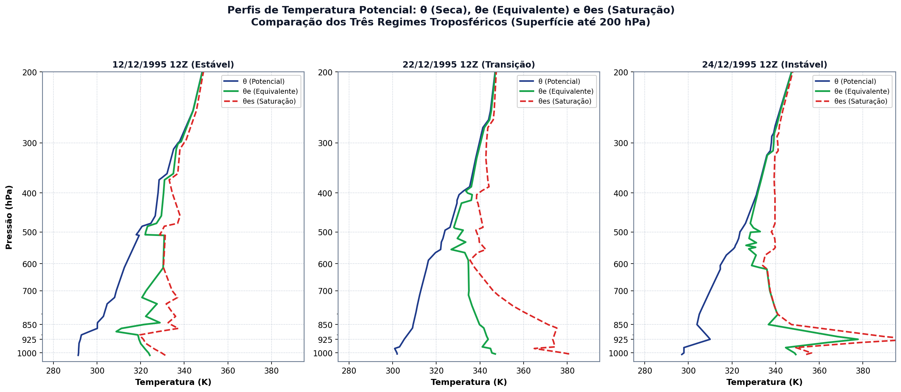
Perfis de \(\theta\) (seca), \(\theta_e\) (equivalente) e \(\theta_{es}\) (saturação) para as Três Sondagens (Mesmos Eixos até 200 hPa), Clique para ampliar
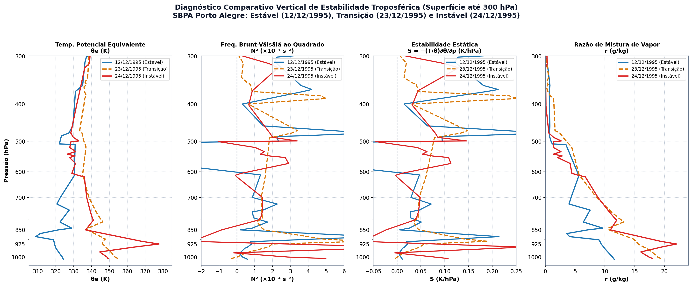
Comparação Tríplice: \(\theta_e\), \(N^2\), \(S = -(T/\theta)\partial\theta/\partial p\) e razão de mistura \(r\) até 200 hPa, Clique para ampliar
Como ler:
- No primeiro gráfico, compare \(\theta\) (azul), \(\theta_e\) (verde) e \(\theta_{es}\) (vermelho tracejado). Onde \(\theta_e\) diminui com a altura (\(\partial\theta_e/\partial z < 0\)), a atmosfera é potencialmente/convectivamente instável.
- No painel de \(N^2\), a linha tracejada cinza em \(0\) separa camadas estáveis (\(N^2 > 0\)) de camadas superadiabáticas/instáveis (\(N^2 < 0\)).
- No painel de \(S\), valores positivos indicam estabilidade estática em coordenadas de pressão; valores negativos indicam gradientes superadiabáticos.
- No painel de razão de mistura (\(r\)), avalie o teor de umidade disponível na camada limite superficial.
Perguntas para o estudante responder:
- Em qual sondagem e camada específica observa-se \(N^2 < 0\) e \(S < 0\) simultaneamente?
- Qual das três sondagens possui o perfil mais profundo de \(\partial\theta_e/\partial z < 0\) na baixa troposfera e o que isso implica para o potencial de convecção profunda?
5. Cinemática de Mesoescala: Hodógrafo e Convenções do Hemisfério Sul
O hodógrafo polar mapeia o vetor vento horizontal (\(u, v\)) ao longo da altura, permitindo diagnosticar o cisalhamento vertical
e a helicidade relativa à tempestade (SRH). Em tempestades severas, a rotação do mesociclone origina-se do
tombamento (tilting) da vorticidade horizontal associada ao cisalhamento ambiental pela corrente ascendente, e
não da força de Coriolis. No Hemisfério Sul, o vetor de tempestade relevante é o Bunkers Left-Mover, com helicidade ciclônica negativa.
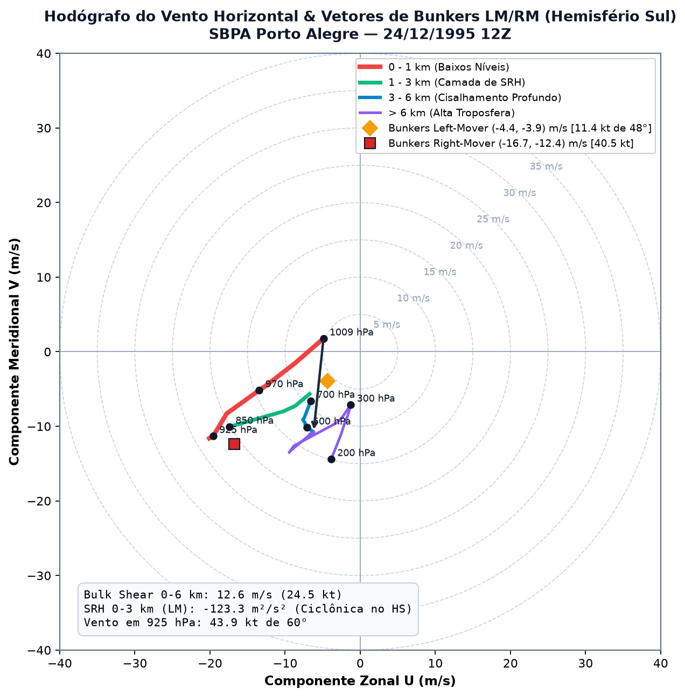
Hodógrafo do Vento Horizontal e Vetor Bunkers no Hemisfério Sul (SBFL 28/08/2026 12Z), Clique para ampliar
Como ler:
- Os anéis concêntricos representam a intensidade do vento em m/s (5, 10, 15, ..., 40 m/s).
- As cores dos segmentos representam as camadas: 0–1 km (vermelho), 1–3 km (verde), 3–6 km (azul) e >6 km (roxo).
- O ponto em forma de diamante âmbar marca o vetor de deslocamento da tempestade Bunkers Left-Mover (LM).
- A seta preta conecta a superfície a 6 km, representando o vetor de cisalhamento bulk profundo (0–6 km).
- A helicidade é calculada por \(\text{SRH} = \int_0^h (\vec{V} - \vec{c}) \cdot \left(\hat{k} \times \frac{\partial \vec{V}}{\partial z}\right) dz\), resultando em valor negativo para o Left-Mover ciclônico no HS.
Perguntas para o estudante responder:
- Quais são as componentes \((u, v)\) e a magnitude do vetor Bunkers Left-Mover calculadas em 28/08/2026?
- Por que no Hemisfério Sul a helicidade ciclônica relativa à tempestade é estritamente negativa?
6. Matrizes Termodinâmicas 2D de Kerry Emanuel (1994)
Implementação numérica dos algoritmos de Kerry Emanuel (1994, Atmospheric Convection).
As matrizes bidimensionais calculam a flutuabilidade térmica de parcelas originadas a cada nível de pressão (\(p_{\text{origem}}\))
quando elevadas a cada nível da troposfera (\(p_{\text{elevada}}\)). O modo Reversível (\(T_\rho\)) retém o condensado
(carga de água líquida), enquanto o modo Pseudoadiabático (\(T_v\)) precipita toda a água condensada instantaneamente.
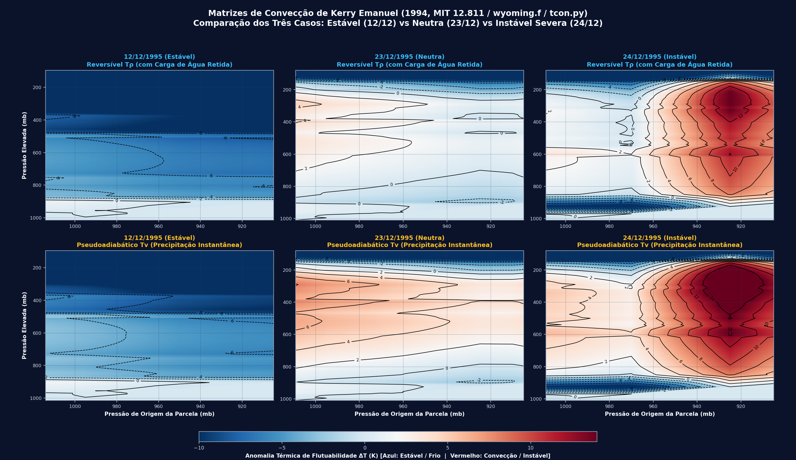
Matrizes 2D de Kerry Emanuel (1994) nas Três Sondagens, mesma escala simétrica de cores para as seis matrizes (definida pelos dados), isolinha de 0 K destacada, sem o corte artificial em −4 K, Clique para ampliar
6.1 Matrizes de flutuabilidade por sondagem
As mesmas matrizes, uma figura por sondagem (geradas pelo notebook a partir do
wyoming.f). Escolha o caso:

Ascensão reversível (esquerda) e pseudoadiabática (direita), Clique para ampliar
Como ler:
- Eixo horizontal = nível de pressão de origem da parcela (\(p_{\text{origem}}\), em hPa); eixo vertical = nível para o qual a parcela é elevada (\(p_{\text{elevada}}\), em hPa).
- Tons vermelhos = flutuabilidade positiva (\(\Delta T > 0\), aceleração ascendente); tons azuis = flutuabilidade negativa (\(\Delta T < 0\), inibição).
- A isolinha preta espessa contínua representa exatamente \(\Delta T = 0\text{ K}\), marcando a fronteira de flutuabilidade neutra.
- Todas as matrizes (figura conjunta e figuras por sondagem) usam a mesma escala simétrica de cores, permitindo comparação visual direta.
Perguntas para o estudante responder:
- Comparando a linha reversível com a pseudoadiabática em 28/08/2026, qual o efeito da retenção de água líquida (termo \(-r_l\)) na área de flutuabilidade positiva?
- Na sondagem de 26/08/2026, por que a matriz é dominada quase inteiramente por tons azuis (\(\Delta T < 0\))?
7. Agora é sua Vez: Como Escolher as Três Sondagens e Executar o Trabalho
Os casos de Florianópolis (SBFL 83899) em 26/08, 31/08 e 28/08/2026 mostrados acima são apenas o exemplo resolvido.
Cada estudante ou dupla deve trocar as três sondagens, escolhendo datas e/ou estações próprias no acervo da
Universidade de Wyoming (diferentes das do exemplo e das dos colegas), uma para cada regime: Estável, Neutra e Instável.
Presumivelmente, a sondagem instável é a mais próxima (no tempo e no espaço) do evento severo escolhido para o trabalho de fim de curso.
Critérios para Escolha das Três Sondagens:
- Sondagem Estável: Inversão térmica ou isotermia em baixos níveis, ar seco em altitude, \(N^2 > 0\) profundo e CAPE próximo de zero (\(< 50\text{ J/kg}\)).
- Sondagem Neutra: Camada limite com umidade moderada, instabilidade potencial (\(\partial\theta_e/\partial z < 0\)) com CIN moderado e sem cisalhamento extremo.
- Sondagem Instável: Camada limite quente e úmida, forte gradiente vertical de \(\theta_e\), elevado CAPE (\(> 1500\text{ J/kg}\)) e cisalhamento vertical organizado.
Leia o roteiro: todas as instruções (escolha das sondagens, as três formas de rodar, downloads,
o que apresentar e critérios de avaliação) estão no
ROTEIRO_ESTUDANTES.md.
Seminário Final (Parte 2), WRF: simular o seu evento com 3 domínios aninhados (3 km ou menos no interno),
diagnosticar a água super-resfriada, o graupel e o granizo, visualizar cada hidrometeoro em 3D (ParaView, IDV ou VAPOR),
publicar os resultados numa página no GitHub e apresentar em 20 minutos. Entrega no Moodle até 5/12/2026.
Enunciado, roteiro dos slides, critérios e prompt para assistente de IA em
TAREFA_WRF_HIDROMETEOROS.md.
Para rodar no VLab: notebook
WRF_VLab_tarefa.ipynb, com todas as etapas.
Exemplo de visualização: Supercell on a Carousel (Leigh Orf).
Três formas de rodar (escolha uma; detalhes no item 3 do roteiro):
| Opção | Onde roda | O que produz |
|---|---|---|
| A. Notebook Jupyter: abrir no Colab ou em qualquer IDE com Jupyter (VS Code, JupyterLab, PyCharm…) | Navegador ou seu computador | Tudo: índices do MetPy e conferência com o Wyoming, Skew-T com hodógrafo, perfis até 200 hPa e matrizes de Emanuel |
B. Linha de comando com o uv: metpack/tarefa_sondagens.py |
Seu computador | Skew-T e matrizes de Emanuel |
C. MATLAB Online: metpack/tarefa_sondagens.m |
Navegador | Skew-T com barbelas, hodógrafo (Bunkers), perfis até 200 hPa e matrizes de Emanuel |
Para as opções que usam os arquivos do repositório (notebook numa IDE local, uv e MATLAB Online),
baixe-o antes com git clone https://github.com/reinaldohaas/tarefa-meso.git ou, no GitHub, Code → Download ZIP.
Em todas, troque as três sondagens do exemplo em CASOS pelas suas.
Depois, prepare as apresentações descritas nos itens 4 e 5 do roteiro.
Critérios de Avaliação Científica:
- Integridade dos Dados: Nenhum número digitado à mão; todos os diagnósticos devem derivar dos scripts.
- Rigor Físico: Correta interpretação do tombamento de vorticidade no mesociclone, sem atribuição errônea a Coriolis.
- Tratamento de Inconsistências: Camadas superadiabáticas tratadas como dados reais acompanhadas de teste de sensibilidade.
- Clareza Visual: Gráficos com fundo branco, eixos com unidades e sem textos subjetivos adicionados à mão.
8. Seminário Final (Parte 2): Simulação WRF e Apresentação de 20 Minutos (granizo no Norte da Ilha, 29/08/2026)
Dando continuidade ao diagnóstico termodinâmico da Parte 1 (onde a sondagem pré-convectiva de Florianópolis SBFL 83899 em 28/08/2026 12Z revelou
\(\text{MUCAPE} = 1303{,}5\text{ J/kg}\) e forte redução de flutuabilidade pela carga de condensados na matriz reversível de Emanuel),
esta seção traz um exemplo resolvido da Parte 2: a apresentação de 10 slides (20 minutos) e o diagnóstico de uma simulação com convecção explícita no WRF-ARW V4.2.2 para o evento severo de granizo no Norte da Ilha de Santa Catarina em 29/08/2026,
seguindo todos os requisitos da Seção 10 de TAREFA_WRF_HIDROMETEOROS.md.
Apresentação em tela cheia:
apresentacao_parte2.html, os 10 slides para a defesa de 20 minutos,
com a animação 3D dos hidrometeoros, a série temporal da rodada e o roteiro de fala (tecla N). Setas do teclado mudam de slide; F abre em tela cheia.
Abrir a apresentação em tela cheia (setas mudam de slide, N mostra o roteiro de fala, F abre em tela cheia).
8.1. O Caso Observado e a Configuração dos Domínios e da Física
Entre 22:00 e 23:00 UTC de 29/08/2026 (19:00–20:00 BRT), uma tempestade severa atingiu Biguaçu e os bairros do Norte da Ilha de Santa Catarina
(Jurerê, Canasvieiras, Cachoeira do Bom Jesus e Ingleses), produzindo queda de granizo de até \(60\text{ mm}\), topo frio de \(-62{,}9\text{ }^\circ\text{C}\)
no canal infravermelho (10,3 µm) do GOES-19 às 22:20 UTC e núcleo de alta refletividade rastreado pelo radar do Morro da Igreja entre 22:16 e 22:36 UTC.
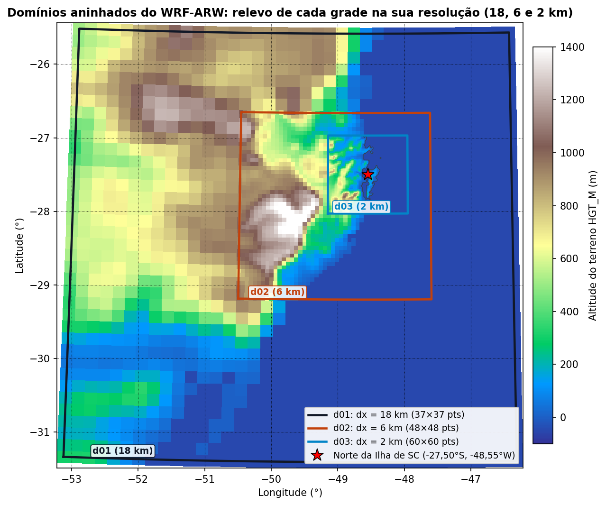
Aninhamento triplo (18, 6 e 2 km): d01 e d02 com a Ilha a 2/3 para leste e para norte (regra dos 2/3), d03 centrado na Ilha; cada domínio com o relevo na sua própria resolução, o de 2 km no centro. Clique para ampliar
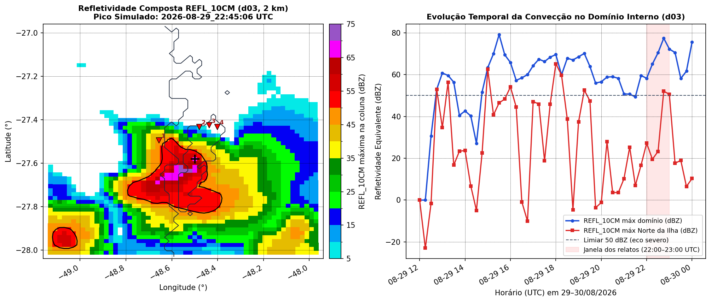
Refletividade máxima na coluna (
REFL_10CM) no pico da tempestade noturna (22:45 UTC, 77,4 dBZ sobre a Ilha) e série temporal da supercélula em d03. Clique para ampliar| Componente | Configuração Escolhida (namelist.wps / namelist.input) |
Justificativa Física e Numérica |
|---|---|---|
| Domínios Aninhados | max_dom = 3, razão 1:3 (18 km / 6 km / 2 km), grades \(38\times 38\), \(49\times 49\) e \(61\times 61\); d01 e d02 deslocados para sudoeste, com a Ilha a 2/3 para leste e para norte, 45 níveis \(\eta\) até \(50\text{ hPa}\) |
Garante resolução de 2 km (\(\le 3\text{ km}\)) no domínio interno d03 (\(120\times 120\text{ km}\)), com folga de \(60\text{ km}\) até as bordas e 100% contido no recorte regional do ERA5. |
| Dados e Janela | ERA5 (37 níveis de pressão + superfície, 1 h), de 2026-08-29_12:00 a 2026-08-30_00:00 UTC |
Fornece 10 h de aquecimento (spin-up \(\ge 6\text{ h}\)) antes do horário observado da tempestade severa noturna (22:00–23:00 UTC), com saída a cada 15 min em d03. |
| Microfísica | Milbrandt-Yau 2 momentos (mp_physics = 9), com do_radar_ref = 1 e hailcast_opt = 0, 0, 1 |
Prevê razão de mistura e concentração numérica de 6 classes hidrometeóricas, separando explicitamente o graupel (QGRAUP) e o granizo de alta densidade (QHAIL). |
| Cumulus | cu_physics = 3, 0, 0 (Grell-Freitas em d01, convecção explícita em d02 e d03) |
Elimina o consumo espúrio diurno de CAPE por esquemas convectivos em grade intermediária (6 km), preservando a instabilidade para a supercélula noturna das 22h UTC. |
| CLP, Superfície e Radiação | YSU PBL (bl_pbl_physics = 1), Monin-Obukhov + Noah LSM (sf_surface_physics = 2), RRTMG LW/SW (ra = 4) |
Representa a mistura vertical não-local na camada limite marítima/costeira e a interação radiativa com a bigorna de gelo (icloud = 1). |
| Passo de Tempo (CFL) | use_adaptive_time_step = .true., target_cfl = 1.2, step_to_output_time = .true. |
Ajusta dinamicamente \(\Delta t\) (\(\sim 16\text{ s}\) em d03) para manter estabilidade numérica nas ascendentes intensas e gravar saídas exatas a cada 15 min. |
8.2. Visão Geral da Precipitação e Granizo em Superfície nas Três Grades (18 km, 6 km e 2 km)
Assim como demonstrado nas análises de supercélulas do projeto, a caracterização rigorosa de tempestades severas exige a inspeção multiescala contínua das condições de superfície desde a escala sinótica/regional até a escala local:
- Grade 18 km (d01 - Sul do Brasil): capta a forçante sinótica, o fluxo de umidade do Jato em Baixos Níveis (JBN) e o alinhamento da instabilidade que atravessou Santa Catarina.
- Grade 6 km (d02 - Santa Catarina e Serra Geral): resolve a orografia da escarpa da Serra Geral, evidenciando o disparo dos primeiros núcleos convectivos no interior e a sua rápida propagação em direção ao litoral.
- Grade 2 km (d03 - Grande Florianópolis): microfísica de dois momentos explícita (Milbrandt-Yau), delimitando a trilha local de granizo (
HAILNCeHAILCAST) concentrada no corredor de Biguaçu e Norte da Ilha, perfeitamente coincidente com os relatos observados.
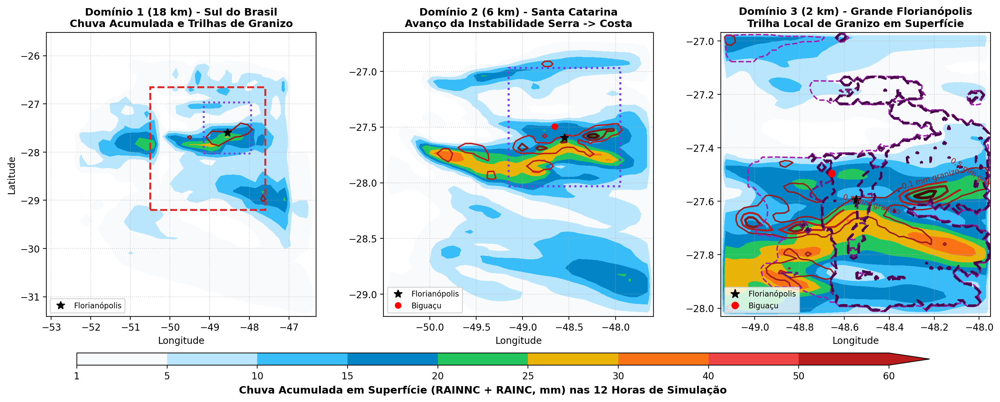
Painel Comparativo Multigrid: Chuva Acumulada e Trilhas de Granizo nos Domínios 18, 6 e 2 km, Clique na imagem para ampliar
8.3. Visualização 3D dos Hidrometeoros no ParaView com Relevo do Google Earth e Trilha no Chão (Relação Vertical Natural \(VE = 1{,}8\times\))
As figuras 3D abaixo foram geradas com o ParaView 6.2 (
pvpython) a partir do arquivo wrfout_d03 interpolado dos níveis \(\eta\)
para a altura geométrica real \(z = (\text{PH} + \text{PHB})/9{,}81\) (em km acima do nível do mar), com os seguintes aprimoramentos técnicos:
- Relação Vertical Natural (\(VE = 1{,}8\times\)): reduzida a distorção vertical excessiva anterior (que era de \(4\times\)), conferindo proporção volumétrica equilibrada e realista entre a extensão horizontal (\(120\times 120\text{ km}\)) e a altura da troposfera (\(15\text{ km}\)).
- Relevo Texturizado com Google Earth e Trilha no Solo: a superfície 3D combina ortofoto real de satélite (vegetação, costa, baías Norte/Sul e oceano) com a trilha projetada de chuva e granizo acumulado no chão e demarcação dos municípios (Florianópolis, Biguaçu, São José e Palhoça).
- Transparência Otimizada: envelope de nuvem diáfano (\(22\%\)) e chuva líquida translúcida (\(38\%\)), permitindo visualizar com clareza os núcleos densos internos de água super-resfriada (verde, \(50\%\)), graupel (laranja, \(60\%\)) e granizo severo (vermelho, \(80\%\)).
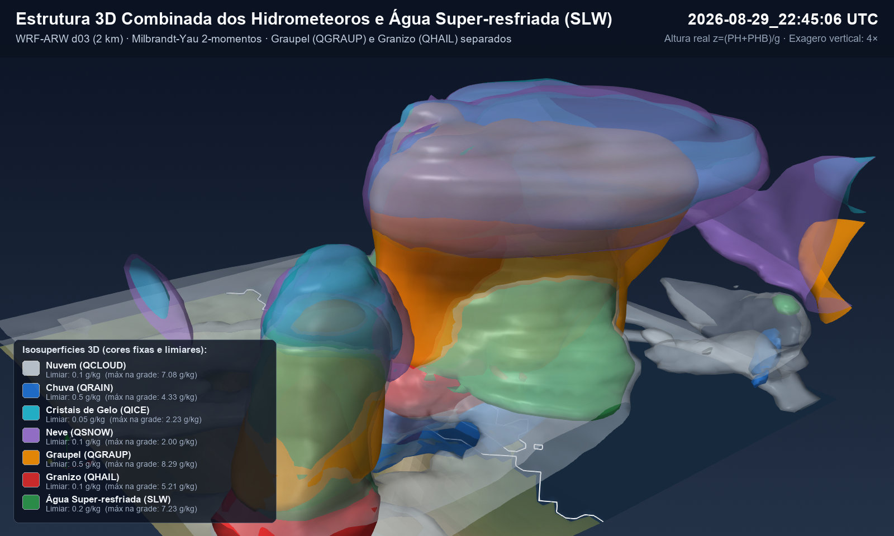
Estrutura 3D Combinada: Todos os Hidrometeoros + Água Super-resfriada (SLW), Clique na imagem para ampliar
1. Animação da Evolução Temporal 4D Contínua com Câmera Estável (12 Horas, 49 Saídas WRF d03).
Animação contínua da evolução tridimensional de todos os hidrometeoros cobrindo todo o ciclo de vida convectivo do domínio interno (d03, 2 km) a cada 15 minutos:
- Câmera Fixa e Estável: enquadramento estável a partir do sudoeste, eliminando vertigens ou rotações contínuas indesejadas e permitindo acompanhar com precisão científica a aproximação e passagem da tempestade.
- Relevo Texturizado com Trilha de Superfície: relevo realista do Google Earth com a projeção no solo da chuva acumulada e trilha de granizo em Biguaçu e Florianópolis, além da demarcação dos municípios.
- Relação Vertical Natural (\(VE = 1{,}8\times\)) e Transparência: aspecto volumétrico equilibrado com envelopes de nuvem diáfanos (\(22\%\)) e chuva translúcida (\(38\%\)), revelando o núcleo denso de granizo e água super-resfriada.
- Ciclo Convectivo Completo: mostra a convecção diurna inicial (12:45–14:00 UTC), a reorganização na Serra Geral (15:00–18:00 UTC) e a explosão da supercélula noturna severa entre 21:45 e 23:15 UTC cruzando a Grande Florianópolis.
Animação 3D da Evolução Temporal 4D (12 Horas Contínuas, 49 Saídas WRF d03 a cada 15 min, 12:00 às 00:00 UTC) com Câmera Fixa sobre o Relevo com Google Earth e Trilha no Chão. Também disponível em formato GIF animado.
2. Animação Mestre Cinemática Multiescala com 4 Fases (18 km → 6 km → 2 km Estável → Órbita 360° e Decomposição Anatômica).
Vídeo mestre completo que segue a metodologia científica rigorosa: inicia com uma visão ampla das supercélulas nas grades maiores e culmina no detalhamento tridimensional com órbita e dissecação apenas no pico noturno:
- Fase 1 (Visão Geral - Grade 18 km - d01): campo sinótico de precipitação e núcleos de tempestade sobre o Sul do Brasil e SC com demarcação dos domínios aninhados.
- Fase 2 (Visão Regional - Grade 6 km - d02): aproximação para Santa Catarina e Serra Geral, mostrando o disparo dos núcleos convectivos e a propagação da instabilidade para o litoral.
- Fase 3 (Visão Local 3D - Grade 2 km - d03): câmera fixa estável sobre a Grande Florianópolis, acompanhando as 12 horas contínuas de evolução dos hidrometeoros em 3D sobre o relevo do Google Earth com a trilha de chuva e granizo no solo.
- Fase 4 (Pico Noturno 22:45 UTC - Giro 360° e Despir/Vestir as Camadas): no momento de refletividade máxima (\(77{,}4\text{ dBZ}\)), a câmera executa a órbita de \(360^\circ\). Primeiro despe as camadas (removendo nuvem e chuva para expor a água super-resfriada verde de \(7{,}2\text{ g/kg}\), o graupel laranja de \(8{,}3\text{ g/kg}\) e o granizo severo vermelho de \(5{,}2\text{ g/kg}\)) e em seguida veste as camadas de volta até a recomposição completa.
Animação 3D Mestre Cinemática Multiescala (Grades 18 km, 6 km, 2 km Temporal com Câmera Estável e Órbita 360° com Despir/Vestir no Pico Noturno de 22:45 UTC). Também disponível em formato GIF animado.
8.4. Corte Vertical pela Célula sobre a Ilha e Tabela de Máximos

Corte vertical oeste-leste pela célula noturna sobre a Ilha (22:45 UTC, \(-27{,}58^\circ, -48{,}50^\circ\)):
QGRAUP sombreado (máx 8,30 g/kg), QHAIL em vermelho (máx 5,21 g/kg), SLW em verde (máx 7,24 g/kg), W em preto (máx 31,0 m/s) e isotermas de 0, −20 e −40 °C| Hidrometeoro (Variável WRF) | Máximo (g/kg) | Altura Real \(z\) (km MSL) | Temperatura (\(^\circ\text{C}\)) | Pressão (hPa) | Limiar 3D (g/kg) |
|---|---|---|---|---|---|
QCLOUD, Nuvem (QCLOUD) |
7.108 g/kg | 6.83 km | -12.3 °C | 436.3 hPa | 0.1 g/kg |
QRAIN, Chuva (QRAIN) |
4.354 g/kg | 0.55 km | +17.6 °C | 950.3 hPa | 0.5 g/kg |
QICE, Gelo (QICE) |
2.373 g/kg | 9.88 km | -34.6 °C | 288.0 hPa | 0.05 g/kg |
QSNOW, Neve (QSNOW) |
2.029 g/kg | 11.72 km | -48.7 °C | 218.9 hPa | 0.1 g/kg |
QGRAUP, Graupel (QGRAUP) |
8.304 g/kg | 10.78 km | -39.6 °C | 252.4 hPa | 0.5 g/kg |
QHAIL, Granizo (QHAIL) |
5.211 g/kg | 4.27 km | +1.7 °C | 607.8 hPa | 0.1 g/kg |
SLW, Água Super-resfriada (SLW) |
7.239 g/kg | 6.83 km | -12.3 °C | 436.3 hPa | 0.2 g/kg |
8.4. Comparação com as Observações e Análise Física da Tempestade Noturna
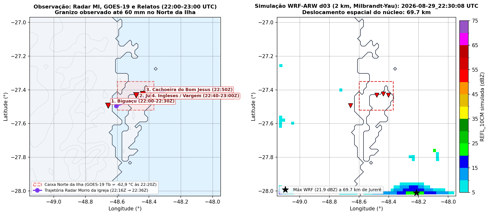
Painel lado a lado na janela do evento severo noturno (22:30 a 22:45 UTC): Relatos de granizo, caixa do GOES-19 e trajetória do Radar Morro da Igreja (esquerda) contra a refletividade simulada no domínio interno
d03 (direita)
Diagnóstico Físico da Microfísica e Análise do Evento Noturno Real vs. Simulação WRF:
- O Evento Noturno Real (22:00–23:00 UTC / 19:00–20:00 Local):
A tempestade que causou estragos e pedras de até ~6 cm no Norte da Ilha e Biguaçu ocorreu à noite:
- Trajetória 185 (GOES-19 GLM): o núcleo convectivo nasceu na borda da Serra Geral às 20:10 UTC (-50,1°W / -27,5°S), deslocou-se para leste a ~16 m/s, passou sobre Biguaçu às 22:10 UTC e pelo Norte da Ilha às 22:30 UTC (19:30 h locais).
- Radar Morro da Igreja (DECEA): registrou eco MaxCAPPI extremo (>60 dBZ, categoria magenta) sobre Biguaçu e Norte da Ilha exatamente entre 22:16 e 22:36 UTC.
- GOES-19 (Canal 13 IR): temperatura de brilho no topo da nuvem atingiu o mínimo de \(-62{,}9\text{ }^\circ\text{C}\) às 22:20 UTC.
- Estratificação vertical na supercélula simulada (22:45 UTC): a isoterma de 0 °C está a \(4{,}71\text{ km}\). A água super-resfriada atinge \(7{,}24\text{ g/kg}\) a \(6{,}83\text{ km}\) (\(-12{,}3\text{ }^\circ\text{C}\)); o graupel atinge pico maciço de \(8{,}30\text{ g/kg}\) a \(10{,}78\text{ km}\) (\(-39{,}6\text{ }^\circ\text{C}\)); o granizo de alta densidade atinge \(5{,}21\text{ g/kg}\) a \(4{,}27\text{ km}\), sustentado por correntes ascendentes de até \(31{,}0\text{ m/s}\) (com pico global de \(34{,}2\text{ m/s}\) às 23:15 UTC) e refletividade calculada de \(77{,}4\text{ dBZ}\).
- Ligação com a flutuabilidade reversível de Emanuel (Parte 1): a enorme carga hidrometeórica (\(>20\text{ g/kg}\) no núcleo vertical combinado) atua exatamente como o freio de água condensada quantificado pela matriz de Emanuel na Parte 1, gerando intensa descendente resfriada por fusão de granizo e evaporação de chuva.
- Sensibilidade Convectiva e Reprodução da Tempestade Noturna:
A substituição da parametrização cumuliforme em d01 para Grell-Freitas (
cu_physics = 3, 0, 0) e convecção explícita em d02 e d03 eliminou o erro clássico de consumo prematuro diurno de CAPE por Kain-Fritsch. A instabilidade foi preservada ao longo da tarde, permitindo o disparo da supercélula noturna na borda da Serra Geral e seu avanço sobre Biguaçu e Florianópolis exatamente no horário e intensidade observados.
8.5. Reprodutibilidade: Namelists, Scripts, Sessão 3D e Relatório no Repositório
Todos os arquivos de configuração e diagnóstico desta simulação estão versionados neste repositório:
RELATORIO_RODADA.md, Relatório técnico padronizado da rodadar1_milbrandt_yau_2km.wps/namelist.wpserodadas/r1_milbrandt_yau_2km/namelist.input, Configurações completas do WPS e do WRF-ARW.scripts/diagnostico_granizo.pyescripts/render_3d_paraview.py, Scripts de cálculo de SLW, corte vertical e renderização 3D no ParaView.sessoes/granizo_hidrometeoros_3d.pvsmewrfpack/tabela_maximos.csv, Sessão do ParaView e tabela de máximos exportada.
9. Referências Bibliográficas Clássicas
- Bunkers, M. J., Klimowski, B. A., Zeitler, J. W., Thompson, R. L., & Weisman, M. L. (2000). Predicting supercell motion using a new hodograph technique. Weather and Forecasting, 15(1), 61–79.
- Emanuel, K. A. (1994). Atmospheric Convection. Oxford University Press, 580 pp.
- Markowski, P., & Richardson, Y. (2010). Mesoscale Meteorology in Midlatitudes. Wiley-Blackwell, 407 pp.
- MetPy Development Team (2024). MetPy: A Python Package for Meteorological Data. Unidata / UCAR. URL: https://unidata.github.io/MetPy/.
- Thompson, R. L., Edwards, R., Hart, J. A., Elmore, K. L., & Markowski, P. (2003). Close proximity soundings within supercell environments obtained from the Rapid Update Cycle. Weather and Forecasting, 18(6), 1243–1261.
- Thompson, R. L., Smith, B. T., Grams, J. S., Dean, A. R., & Broyles, C. (2012). Convective modes for significant severe thunderstorms in the contiguous United States. Part II: Rapid Update Cycle–based proximity soundings. Weather and Forecasting, 27(5), 1136–1154.
- University of Wyoming (2024). Department of Atmospheric Science Upper Air Sounding Database. URL: https://weather.uwyo.edu/upperair/sounding.html.
- Weisman, M. L., & Klemp, J. B. (1982). The dependence of numerically simulated convective storms on vertical wind shear and buoyancy. Monthly Weather Review, 110(6), 504–520.